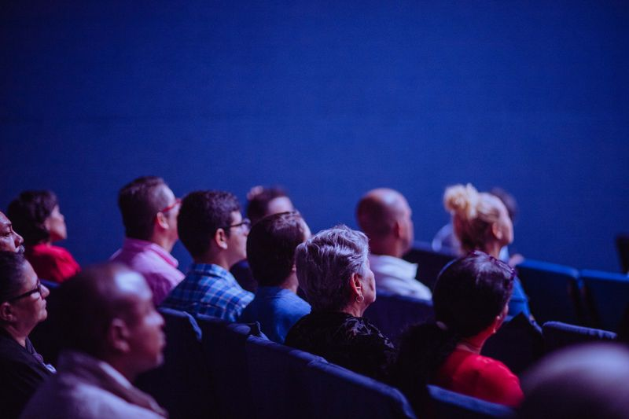

Wedding coverage starts long before the ceremony. We review the timeline, learn the names of the people who matter most, map the lighting conditions across the day, and identify the places where quiet candid moments are most likely to happen.
Morning preparation
The first hour is about details and atmosphere. Invitation suites, florals, rings, final wardrobe touches, and close family interactions help set the emotional tone of the story before the schedule speeds up.
Portraits without pressure
Couple portraits work best when they feel like a short pause rather than a long production. We keep direction simple, use movement instead of stiff posing, and leave space for the couple to settle into each other rather than the camera.
Reception storytelling
Once speeches and dancing begin, anticipation matters as much as reaction. We watch for body language, sight lines, and pockets of light so the gallery reflects both the main events and the people experiencing them.


Why process matters
A clear process gives couples room to enjoy the day. The less they need to think about photography logistics, the more honest the images become.